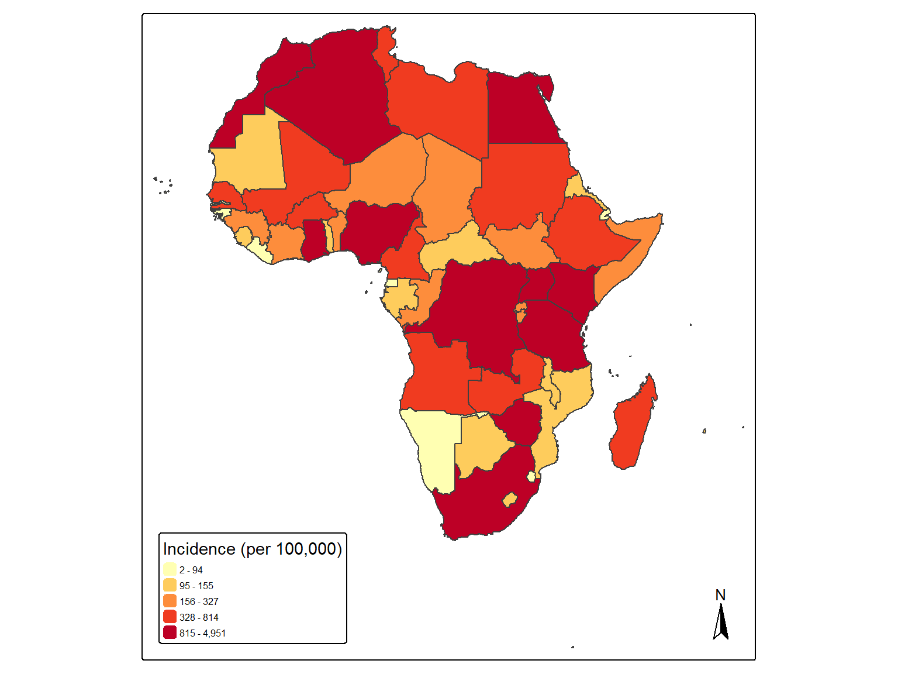
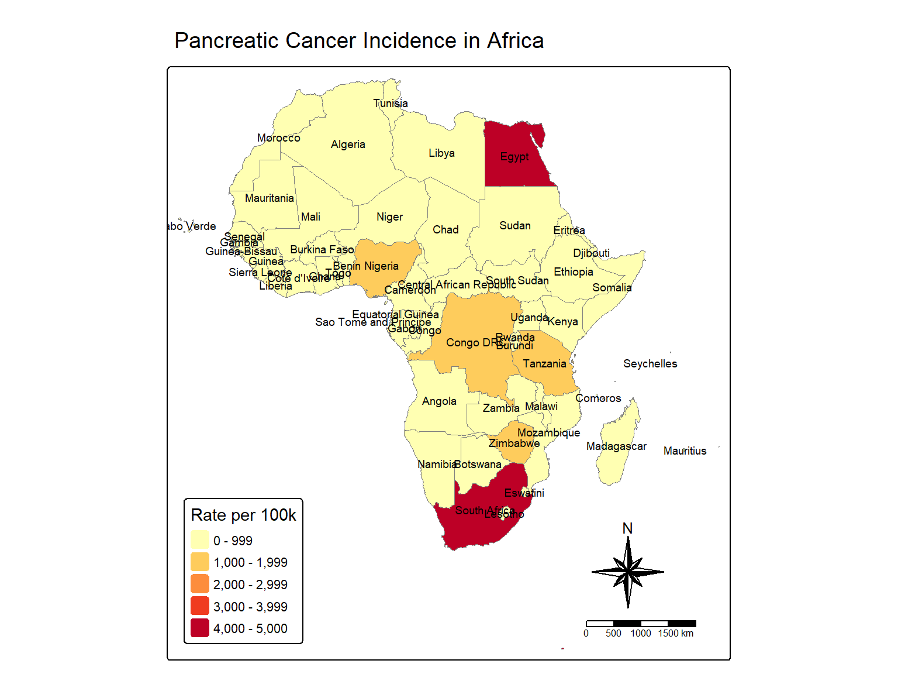
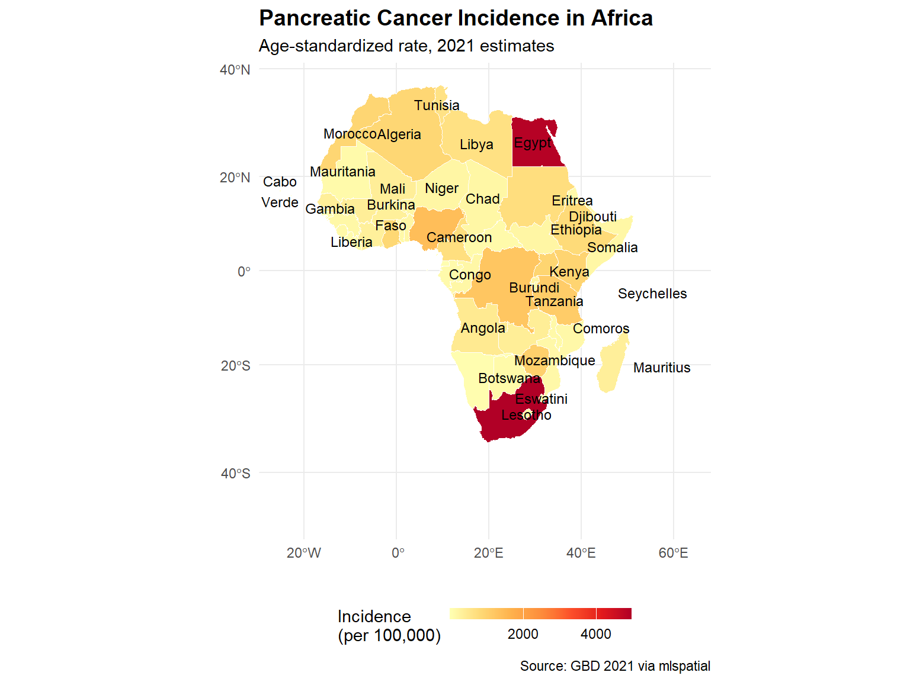
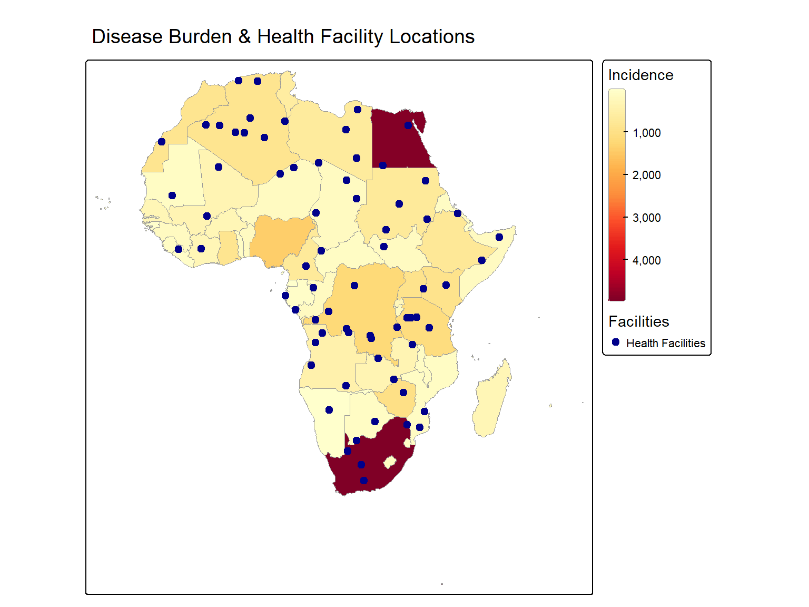
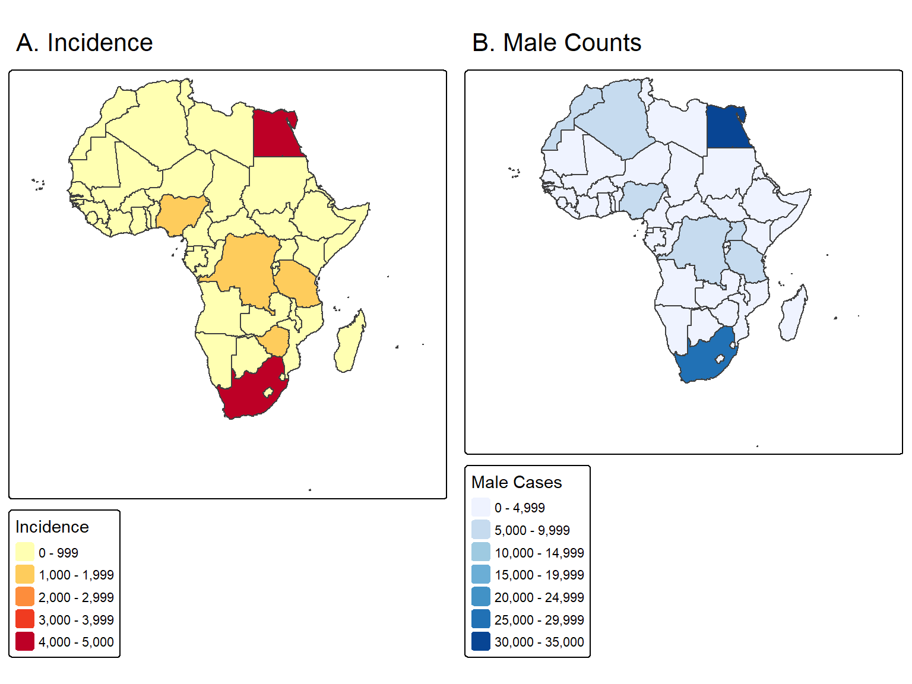
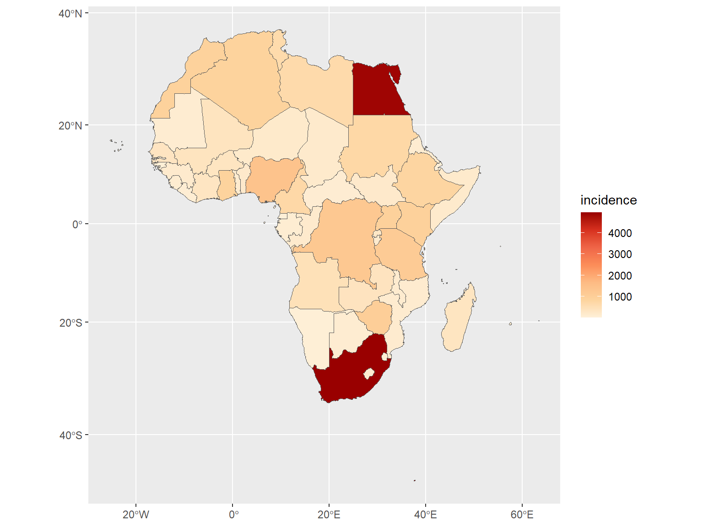

map1 <- mlspatial::plot_single_map(
sf_data = africa_health,
var = "incidence",
title = "Incidence (per 100,000)",
palette = "yl_or_rd"
)
map1
This module teaches you to create publication-quality thematic maps using mlspatial, tmap, and ggplot2. You will learn static maps, interactive maps, multi-layer overlays, and export techniques.
mlspatialPurpose: Generate a publication-ready choropleth map in one line.
map1 <- mlspatial::plot_single_map(
sf_data = africa_health,
var = "incidence",
title = "Incidence (per 100,000)",
palette = "yl_or_rd"
)
map1
Key parameters: - var: Column name to map (must be quoted). - palette: Any RColourBrewer or viridis palette name. "yl_or_rd"( old name = "YlOrRd") is standard for public health “hot” maps.
Expected output: A static tmap object showing African countries coloured by pancreatic cancer incidence.
Purpose: Annotate maps so stakeholders can identify regions without a separate legend.
labelled_map <- tm_shape(africa_health) +
# Fill layer (colours the polygons)
tm_fill(
"incidence",
fill.scale = tm_scale(values = "brewer.yl_or_rd"),
fill.legend = tm_legend(title = "Rate per 100k")
) +
# Border layer (outlines)
tm_borders(col = "grey50", lwd = 0.6) +
# Text layer (adds, country names)
tm_text(
"NAME",
size = 0.6,
col = "black"
) +
# Title layer
tm_title("Pancreatic Cancer Incidence in Africa",
color = 'black', size = 1.2) +
# Layout (everything else about map appearance)
tm_layout(
legend.position = c("left", "bottom")
) +
# Add Compass symbol
tm_compass(
type = "8star",
position = c("right", "bottom")
) +
# Add scalebar
tm_scalebar(
position = c("right", "bottom")
)
labelled_map
# You can also create a quick map using the qtm() function (less flexible)
# qtm(africa_health, fill = "incidence", fill.scale = tm_scale(values = "brewer.yl_or_rd"))Key parameters: - tm_text(): text = "NAME" specifies the label column. - size is in map units; adjust downward for small countries.
Expected output: A choropleth map with country names overlaid at centroids.
ggplot2Purpose: Leverage the tidyverse grammar of graphics for highly customized static maps.
library(ggplot2)
ggplot(africa_health) +
geom_sf(aes(fill = incidence), colour = "white", linewidth = 0.2) +
scale_fill_distiller(
palette = "YlOrRd", direction = 1,
name = "Incidence\n(per 100,000)",
breaks = c(0, 2000, 4000)
) +
theme_minimal() +
labs(
title = "Pancreatic Cancer Incidence in Africa",
subtitle = "Age-standardized rate, 2021 estimates",
caption = "Source: GBD 2021 via mlspatial",
x = "", y = ""
) +
# geom_text(
# aes(label = stringr::str_wrap(NAME, 8), geometry = geometry),
# stat = "sf_coordinates",
# colour = 'black', size = 3
# ) +
geom_sf_text(
aes(label = stringr::str_wrap(NAME, 8)),
size = 3.2, colour = 'black',
check_overlap = TRUE # avoids overlapping labels
) +
theme(
legend.position = "bottom",
plot.title = element_text(face = "bold", size = 14)
) +
guides(
fill = guide_colourbar(barheight = 0.5, barwidth = 8)
)
Key parameters: - geom_sf(): The workhorse for sf objects. aes(fill = incidence) maps the variable to color. - scale_fill_distiller(): For continuous data. Perceptually uniform, color-blind safe, and prints well in greyscale.
Expected output: A static ggplot map with a continuous colour legend.
tmapPurpose: Allow panning, zooming, and layer toggling for exploratory data analysis.
# Switch tmap to interactive mode
tmap_mode("view")
interactive_map <- tm_shape(africa_health) +
tm_fill(
"incidence",
fill.scale = tm_scale(values = "brewer.yl_or_rd"),
fill.legend = tm_legend(title = "Incidence (per 100k)"),
popup.vars = c("incidence", "female", "male")
) +
tm_borders(col = "black", lwd = 0.5)
interactive_map
# Return to static mode for publication figures
tmap_mode("plot")Key parameters: - tmap_mode("view"): Renders to Leaflet JavaScript widget. - popup.vars: Vector of column names shown when a user clicks a polygon.
Expected output: An interactive HTML widget (in RStudio Viewer or browser) of the Africa map that you can zoom and pan with clickable pop-ups.
Purpose: Combine disease polygons with point locations (e.g., cases, facilities) to reveal spatial relationships.
set.seed(42)
# Simulate 70 health facility points across Africa for demonstration
facility_points <- st_sample(africa_health, size = 70, type = "random") |>
st_as_sf() |>
mutate(facility_id = paste0("FAC_", row_number()),
type = "Health Facilities")
# Multi-layer map
overlay_map <- tm_shape(africa_health) +
tm_polygons(
"incidence",
fill.scale = tm_scale_continuous(values ="brewer.yl_or_rd"),
fill.legend = tm_legend(title = "Incidence",
orientation = 'portrait'),
col = "grey60", lwd = 0.5) +
tm_shape(facility_points) +
tm_dots(
fill = "type",
fill.scale = tm_scale_categorical(values ="darkblue"),
fill.legend = tm_legend(title = "Facilities"),
size = 0.5
) +
# tm_add_legend(
# type = "symbols",
# labels = "Health Facilities",
# fill = "darkblue",
# shape = 16, # Standard round solid dot
# size = 0.5, # Slightly scaled up visually just for the legend box
# title = "Facilities"
# ) +
tm_title(
"Disease Burden & Health Facility Locations", size = 1.2
) +
tm_layout(
component.autoscale = FALSE
)
overlay_map
Key parameters: - tm_shape() can be called multiple times; each subsequent layer refers to the most recent shape. - tm_dots() controls point symbology.
Expected output: A single map showing incidence fills overlaid with blue facility dots.
Purpose: Arrange multiple maps side-by-side and save publication-quality figures.
# Create two thematic maps
# Map 1
map_inc <- tm_shape(africa_health) +
tm_fill(
"incidence",
fill.scale = tm_scale(values = "brewer.yl_or_rd"),
fill.legend = tm_legend(title = "Incidence")
) +
tm_borders() +
tm_title("A. Incidence")
map_male <- tm_shape(africa_health) +
tm_fill(
"male",
fill.scale = tm_scale(values = "brewer.blues"),
fill.legend = tm_legend(title = "Male Cases")
) +
tm_borders() +
tm_title(text = "B. Male Counts")
# Arrange in a grid using tmap_arrange
combined <- tmap_arrange(map_inc, map_male, ncol = 2)
combined
# mlspatial can also be used to combine the plots
# combined <- mlspatial::plot_map_grid(list(map_inc, map_male), ncol = 2)
# combined
# Export static tmap
tmap_save(
combined,
filename = "africa_disease_panel.png",
width = 12, height = 6, dpi = 300
)
# Export ggplot object
gg <- ggplot(africa_health) +
geom_sf(aes(fill = incidence)) +
scale_fill_distiller(palette = "OrRd", direction = 1)
gg
ggsave("africa_incidence_ggplot.pdf", plot = gg, width = 10, height = 8)Key parameters: - plot_map_grid(): ncol sets the number of columns. - tmap_save(): DPI and dimensions control print resolution. - ggsave(): Supports .png, .pdf, .svg, .tiff.
Expected output: A 2-panel figure file saved to your working directory.
Next: Proceed to Module 3: Spatial Autocorrelation and Cluster Analysis.